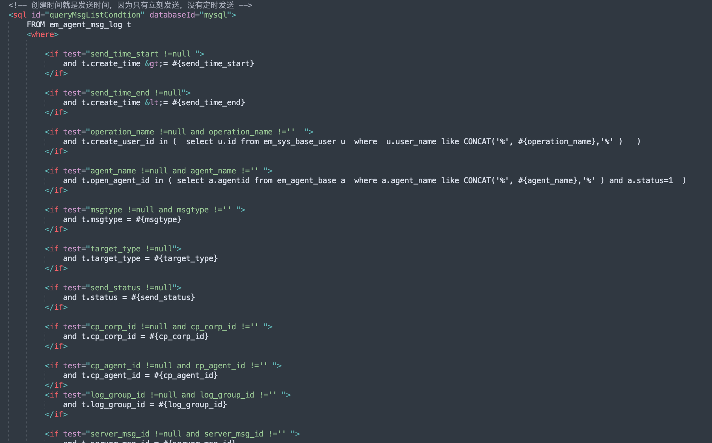

Mybatis
目录
简介
Mybatis是java里的数据库模块，用于对数据库进行操作，属于dao层。
原理
\$和#
Mybatis在定义sql语句时有两种方式，注释形式和xml形式，其中xml形式用的更多一点
xml形式：

注释形式,本质上和xml形式差不多只是写在了持久层接口的注释里，用的不多。
在mybatis里，sql语句与参数进行拼接时，有两种符号#和\$
SELECT * FROM NEWS WHERE ID = #{id}
SELECT * FROM NEWS WHERE ID = ${id}
他们的区别就是#是启用了预编译，而\$没有启用。
所以审mybatis时可以重点关注\$符的拼接。
同时还有下面的函数也值得关注
like
新手在like后面插入参数时往往会写错像这样
Select * from news where title like ‘%#{title}%’
但这样会报错，有可能新手程序员就直接把#改成\$了，从而造成注入
这样改就没事了，安全了
select * from news where tile like concat(‘%’,#{title}, ‘%’)
in
同理，in新手也可能写成这样从而报错，然后改成\$
Select * from news where id in (#{ids})
正确写法如下
id in
<foreach collection="ids" item="item" open="("separatosr="," close=")">
##{ids}
</foreach>
order by
只能用\$，不能用#开启预编译
原理是order by后面的参数不能参数化，在参数被预编译参数化的时候会被加上引号，从而导致order by后面的值是一个字符串值，但是order by后面只能跟字段名而不能跟字符串值，否则会报错。
具体注入payload
报错注入
select * from ha order by updatexml(1,if(1=1,1,user()),1);#查询正常
select * from ha order by updatexml(1,if(1=2,1,user()),1);#查询报错
select * from ha order by extractvalue(1,if(1=1,1,user()));#查询正常
select * from ha order by extractvalue(1,if(1=2,1,user()));#查询报错
rand盲注 当rand里的值分别为false和true的时候，排列状况会不一样
rand(ascii(mid((select database()),1,1))>96)
时间盲注
order by if(1=1,1,sleep(1))
if盲注
order by if(表达式,1,(select id from information_schema.tables))
如果表达式为false时，sql语句会报ERROR 1242 (21000): Subquery returns more than 1 row的错误，导致查询内容为空，如果表达式为true是，则会返回正常的页面。
OGNL注入
if
众所周知Mybatis有很多通过XML来定义的SQL语句。
if是其中用的较多的一类
<select id="findActiveBlogWithTitleLike" resultType="Blog">
SELECT * FROM BLOG WHERE state = 'ACTIVE'
<if test="title != null">
AND title like #{title}
</if>
</select>
其中if标签的test属性是可以传入OGNL表达式来造成OGNL注入的。 然后if标签的属性处一般都是写死的，不太可控，所以通过if标签来造成OGNL注入希望不大。
choose
Mybatis的一种类似switch case的标签
<select id="findActiveBlogLike" resultType="Blog">
SELECT * FROM BLOG WHERE state = 'ACTIVE'
<choose>
<when test="title != null">
AND title like #{title}
</when>
<when test="author != null and author.name != null">
AND author_name like #{author.name}
</when>
<otherwise>
AND featured = 1
</otherwise>
</choose>
</select>
when的test属性可传入OGNL表达式造成OGNL注入，但如if标签一样一般写死，希望不大。
bind
bind标签用于初始化一个变量并用于上下文
<select id="selectBlogsLike" resultType="Blog">
<bind name="pattern" value="'%' + _parameter.getTitle() + '%'" />
SELECT * FROM BLOG
WHERE title LIKE #{pattern}
</select>
bind标签的value属性存在着OGNL注入，且很有可能是可控的。 但是 由于value属性对OGNL表达式的解析顺序问题，导致bind标签实际上也无法造成OGNL注入，具体原理如下。
我们有如下Mybatis xml，可见name是一个可控的值，且存在于bind标签的value属性。
<if test="name != null and name !=''">
<bind name="likename" value="name" />
name like #{likename}
</if>
若我们传入name=**${@java.lang.Math@min(4,10)}**， 理想情况下value属性应该为4，但实际上为字符串值的${@java.lang.Math\@min(4,10)}
究其原因，就是OGNL在解析name这个变量时就已经触发了OGNL解析：把name解析为\${@java.lang.Math\@min(4,10)}。如果能再来一次OGNL解析就能把value整成4，可是OGNL只发生一次。
所以bind标签是基本上无法ognl注入的，除非程序员直接在value放一个OGNL表达式（但这样也貌似不叫OGNL注入了
<if test="name != null and name !=''">
<bind name="likename" value="${@java.lang.Math@min(4,10)}" />
name like #{likename}
</if>
\${param} 参数
<select id="findTeacherByName" resultMap="BaseResultMap" parameterType="com.example.mybatis.entity.Teacher">
select id,email from Teacher where name = ${name};
</select>
存在可控变量name，依旧无法注入，原理同bind的value属性，解析顺序的问题
spirngboot 注释（唯一的可能）
Mybatis 为springboot提供了一些用于简化SQL操作的注释，意在让开发人员不用写那么多繁琐的XML文件，以达到动态SQL的效果
@Insert
@Update
@Delete
@Select
@InsertProvider
@SelectProvider
@UpdateProvider
@DeleteProvider
可见注释分为了两类：带Provider的和不带Provider的
不带Provider的注释使用起来也很笨拙和鸡肋，因为也要写一次XML，只不过是写在注释里。由于本质还是XML，所以造成OGNL注入的风险也是很低很低的
@Update({"<script>",
"update Author",
" <set>",
" <if test='username != null'>username=#{username},</if>",
" <if test='password != null'>password=#{password},</if>",
" <if test='email != null'>email=#{email},</if>",
" <if test='bio != null'>bio=#{bio}</if>",
" </set>",
"where id=#{id}",
"</script>"})
void updateAuthorValues(Author author);
带Provider的注释使用起来就高级些了，通过注释来指定生成SQL语句的方法
@SelectProvider(type = UserDaoProvider.class, method = "findTeacherByName")
Teacher findUserByName(Map<String, Object> map);
SelectProvide 调用的方法为 findTeacherByName，如下：
public String findTeacherByName(Map<String, Object> map) {
String name = (String) map.get("name");
String s = new SQL() {
{
SELECT("id,email");
FROM("Teacher");
if(map.get("id")!=null)
WHERE("name=#{name}");
}
}.toString();
return s;
}
}
这样的动态SQL，可以先进行一轮OGNL解析，再把解析结果生成为对应的XML文件的形态（实际上并未生成，只是一个比喻），最后XML文件被OGNL再次解析，从而导致OGNL注入。
如下情形都可使用，只要是拼接都可以打
WHERE("name=#{name}");
WHERE("name=" + name);
String sql = "select id,email from Teacher where name = " + name;
String name = (String) map.get("name");
String finalName = String.format(" name in (%s)", name);
String sql = new SQL() {{
SELECT("id,email");
FROM("Teacher");
WHERE(finalName);
ORDER_BY("id desc");
}}.toString();
可用范围
mybatis-spring-boot-starter >=2.0.1（mybatis-spring-boot-starter组件从2.0.1版本开始支持Provider动态SQL）
或者
Mybatis 全版本
或者
mybatis-plus-boot-starter >=3.1.1
关键字
直接全局搜索xml文件的 \$ 符即可
找到可疑的sql语句后就看xml标签里的id属性定位到调用类，如果能一步定位到controller最好，然后向上摸索。